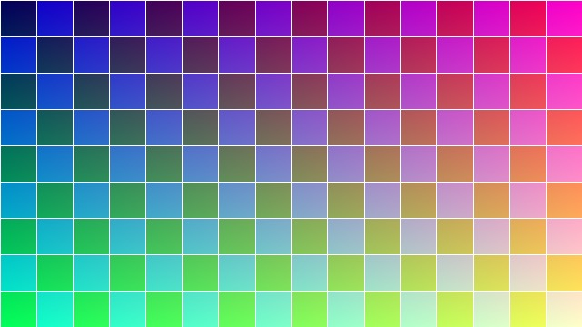

Video element controls, captions, rates, fullscreen and picture-in-picture
H.264/MP4, 6 s, 640×360, with two subtitle tracks and a poster.
Autoplay policy a muted video may start on its own; an unmuted one usually may not
autoplay + muted — checking…
Scripted play() without a gesture — checking…
Audio element playback, Web Audio synthesis and the Media Session API
WAV, 2.5 s
AAC in M4A — a codec support check in itself
Web Audio output appears here.
Images formats, responsive sources, lazy loading and decoding
 PNG…
PNG…
JPEG… AVIF…
AVIF… HEIC…
HEIC… 404 image…
404 image…
srcset / sizes…
loading="lazy"1600×900
CSS backgroundbackground-size: cover
SVGgradients, shapes, text
Canvas & WebGL
2D context: paths, gradients, text, images, animation
WebGL: initialising…